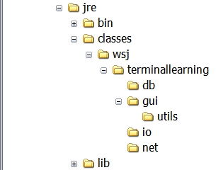

Make sure you've read the Packages Supplements:
The first paragraph of Supplement F explains what packages are. You've been using some of Java's existing packages whenever you use an import statement. For example, when you use the Scanner or JOptionPane class, you were using classes in another package. Classes like String and Math are in the java.lang package, which is automatically available to all programs without using import statements.
Programmers usually create their own packages (for reasons discussed in the next section). For example, in Logic class you worked with Dr. Becker's Robots. This collection of classes were organized into a variety of packages, such as becker.robots.
When you create your own packages, you are basically deciding how you will organize your classes.
The textbook supplement from the 7th Edition explains 4 reasons why programmers use packages. Make sure you know them!
The first step to creating a package is choosing a name for your package. It is likely that you'll be creating more than one package in your career, so choose wisely! You also have to be careful not to choose a name that someone else has chosen. For this reason, the standard convention is to use your own domain name backwards. For example, my package name would be com.terminallearning. I actually use wsj.terminallearning because wsj are my initials and I figure my packages would be easier to find (there are a lot of packages out there starting with com!).
The last part of your package name is more specific to what the package contains. For example, I have the following packages that I use in my Java programs:
Page 2 of the supplement explains how each portion of the package name that is separated by the periods is actually part of a directory structure. For example, in Java there are some packages called javax.swing, javax.swing.border, and javax.swing.event. There is actually a directory called "javas", and in that directory is a subdirectory called "swing". In the javax\swing directory is a collection of generic Swing classes (such as JOptionPane). Also in the javax\swing directory are two sub-directories (there's actually a lot more, but I only mentioned two here, so we'll stick with that) called "border" and "event". In the javax\swing\border directory are classes that deal with creating borders on GUI components, and in the javax\swing\event directory are classes that deal with newer Swing event-handling techniques.
You'll find later today that when you evenutally create your own packages, you'll see a similar directory structure. My directory structure for my packages starts with wsj, which contains a sub-directory terminallearning. This directory contains the sub-directories gui, net, io, and db, and so on...
Once you've decided on a name for your packages, you simply write the classes and methods that you want your package to contain. Each of these classes and files must start with the package statement. The package statement must be the first statement in your file, above the import statement (don't worry about comments/documentation). In such a statement, the keyword package is followed by the name of the package that this class will belong to. For example:
package prog24178.week1;
The statement above indicates that this class belongs to the prog24178.week1 package.
Once you compile the classes, the bytecode (.class) files will be stored in the directory structure described above (in our example, the class will be in prog24178\week1. You can then include this package of classes in a larger application by using the import statement and including the packages with your deployed program. How you include your package with your application depends on what method you're using to create your application. We'll be using NetBeans, which does most of the work for you, so we'll discuss this when we get to deployment.